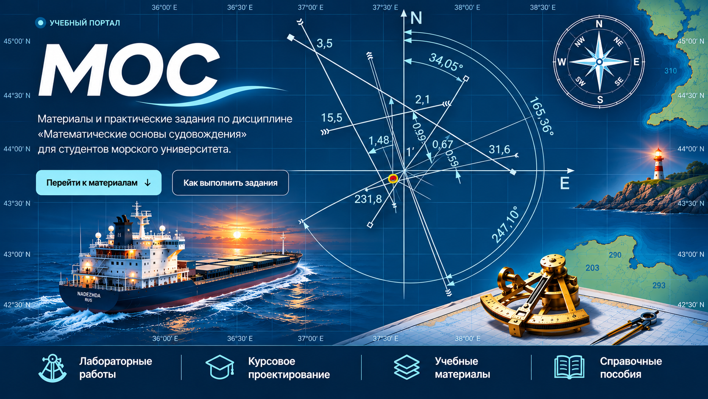

Инструкция для студентов
Порядок получения заданий, выполнения лабораторных работ и курсового проекта для студентов очной и заочной форм обучения.
Очная форма обученияЛабораторные работы · Курсовое проектирование · Допуск к экзамену
Лабораторные работы
- В разделе «Задания» скачайте файл с заданиями на лабораторные работы на текущий учебный год.
- Найдите в файле своё персональное задание.
- Выполняйте работу, используя специальный шаблон для лабораторных работ, размещённый в разделе «Учебные материалы».
- Методические указания по выполнению лабораторных работ можно скачать в разделе «Учебные материалы» или получить в печатном виде в библиотеке университета.
Курсовое проектирование
- Задание на курсовое проектирование формируется на основании ваших исходных данных из курсового проекта по дисциплине «География водных путей».
- После формирования файл с заданием будет размещён в разделе «Задания».
- Шаблон курсового проекта и методические указания по его выполнению размещены в разделе «Учебные материалы».
Порядок получения допуска
- Допуск к защите курсового проекта предоставляется только после получения зачётов по всем лабораторным работам.
- Допуск к экзамену предоставляется только после успешной защиты курсового проекта.
Заочная форма обученияЛабораторные работы · Курсовое проектирование · Допуск к экзамену
Лабораторные работы
- В разделе «Задания» скачайте файл с заданиями на лабораторные работы на текущий учебный год.
Файл с заданиями появится в разделе «Задания» после формирования учебных групп и передачи списков групп преподавателю.
- Найдите в файле своё персональное задание.
- Выполняйте работу, используя специальный шаблон для лабораторных работ, размещённый в разделе «Учебные материалы».
- Методические указания по выполнению лабораторных работ можно скачать в разделе «Учебные материалы» или получить в печатном виде в библиотеке университета.
Курсовое проектирование
- Задание на курсовое проектирование выдаётся на кафедре судовождения под личную подпись.
- Шаблон курсового проекта и методические указания по его выполнению можно найти в разделе «Учебные материалы».
Порядок получения допуска
- Допуск к защите курсового проекта предоставляется только после получения зачётов по всем лабораторным работам.
- Допуск к экзамену предоставляется только после успешной защиты курсового проекта.
Выполненные материалы направляйте на электронную почту преподавателя:
В теме письма обязательно указывайте подаваемый материал, фамилию и номер группы курсанта. Например: ЛР11, Иванов, 124.
Задания
Файлы индивидуальных заданий на лабораторные работы и курсовое проектирование.
Файлы заданий пока не загружены
Здесь будут размещаться задания для очной и заочной форм обучения.
Учебные материалы
Скачивайте необходимые файлы. Новые материалы будут появляться в соответствующих разделах.
Материалы скоро появятся
Раздел будет заполнен после загрузки учебных файлов.
ⓘ Для скачивания нажмите на название или кнопку «Скачать» рядом с материалом.